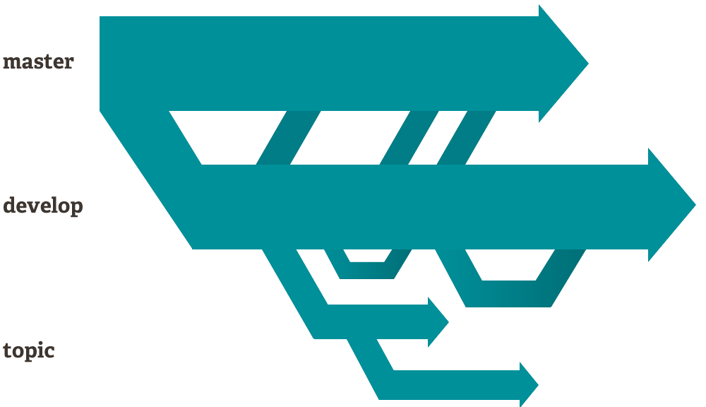
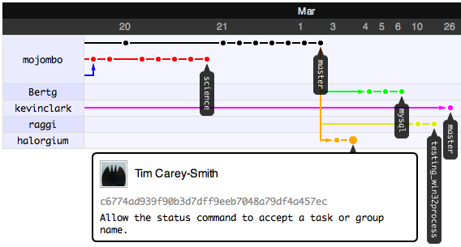
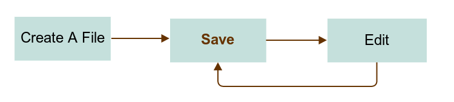

Physicists Should Use Git
Or everyone should try git
Created by Lei Ma
If git is the answer,
what is the question?
Let's go shopping.
How Do We Track What We Have Done?
Shopping List - Add & Commit
- Apple
- Orange
- Milk
- Beef
How Do Alice and Bob Shop Together?
Collaborative Shopping - Push & Pull
Alice
- Apple
- Orange
- Beef
Bob
- Milk
- Cereal
- Beef
- Chocolate
Social Shopping - Fork & Pull Request
Look at Charles. He's got nice things in his cart. Let's just copy it.
Alice, I think Charles should also get a lot more to eat. Let's tell him.
Hey I do need them. I'll merge your cart to mine.
Git, Is Much More Powerful!
Git
Is a Distributed Version Control System
blesses your files and data
is Fast and easy to use
is Open Source
Distributed Version Control System
Version Control

Distributed Version Control System
Distributed

Decentralization
files and data assurance
Git always adds things, even you do deletions.
Records of each change are kept safe.
Rolling back to previous commits is easy.
Easy to Use
GUI for Mac, Linux and even Windows
CL involves only 4 or 5 commands for beginners.

Open Source and Free to Use
Git in Action
Writing An Essay: Offline and Alone
One Person Workflow 
How do we keep track of revision history?

files in the cloud
Push to remote server
http://octodex.github.com/cloud/
What if we want to collaborate?
http://git-scm.com/blog
Git is a DISTRIBUTED tool.
GitHub

Collaborate on GitHub
- Push
- Pull
- Fork
- Pull Request
- Network Graph
Git in Action
Writing An Essay: Collaboration
Network Graph of Theoretical Physics Repo
Network Graph of Theoretical Physics Repo
Decentralization
When I say decentralization I do mean D-E-C-E-N-T-R-A-L-I-Z-A-T-I-O-N.
GitHub, Social Coding?
GitHub is not only for programmers.
- A New Filesystem
- GitHub "Organizations"
- GitHub Pages
- Open Science?
Not A Programmer? No Problem.
So many ways to use GitHub
-
Teaching
- Lecture Notes
- Students' Work Tracking
- Course Webpage
- Collaboration
- Assignments
- Book Writing
- Blogging
- Photographing
- Music Composing
- 3D Modeling
- Geomapping
- Even German Federal Law
Wait, I thought we were talking about Git.
GitHub is the largest and probably the best.
We do have a bunch of alternatives.
What About My Privacy?
Work offline or as a better choice use private repository.
- Buy GitHub Pro Account
- Apply for Free Student Account
- Switch to Bitbucket
Open Science
Science is open already, but we need more.
The workflow of science is like our git workflow. It's just not git enough.
Fork a work, not just a paper.
Decentralize research by open science. Fight Matthew effect.
New Evaluation Procedure for scientists is one of the keypoints.
Get Started
 http://octodex.github.com/octobiwan/
http://octodex.github.com/octobiwan/
This page doesn't exist!
Source of this presentation is here (gradschool). [Presentations/whygit]
I use reveal.js to make these slides. It's a great tool.
My GitHub Account: @OctoMiao
A HTML4Scientists Template: HTML4Scientists
Survive Grad School: GradSchool Repo